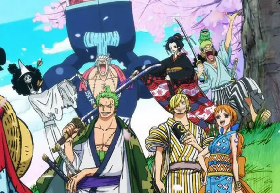
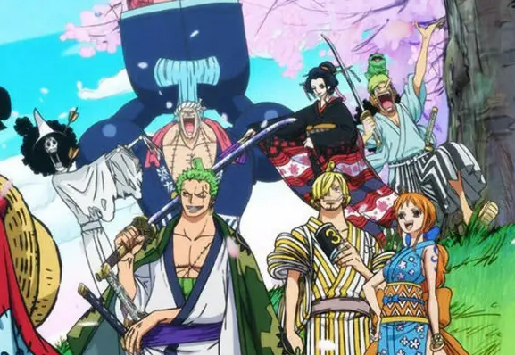

Enredo

 

"One Piece" segue a jornada de Monkey D. Luffy, um jovem com o sonho de se tornar o Rei dos Piratas. Luffy ganha o poder de esticar seu corpo como borracha após comer a Fruta
do Diabo Gomu Gomu. Ele parte em sua aventura após a execução de Gol D. Roger, o antigo Rei dos Piratas, e ouvir sobre o lendário tesouro One Piece, que está escondido na Grand Line.
Luffy monta sua tripulação, os Piratas do Chapéu de Palha, incluindo membros como Roronoa Zoro, o espadachim; Nami, a navegadora; Usopp, o atirador; Sanji, o cozinheiro;
e muitos outros. Juntos, eles exploram a Grand Line, enfrentando perigos, inimigos e desafios em cada ilha que visitam.
Ao longo da jornada, os Piratas do Chapéu de Palha enfrentam diversos obstáculos, incluindo outros piratas, agentes da Marinha Mundial e o Governo Mundial. Eles também conhecem
diferentes facções e grupos, como os Shichibukai (Sete Guerreros do Mar) e os Yonkou (os quatro piratas mais poderosos do mundo).
A busca de Luffy pelo One Piece o leva a confrontar importantes figuras do mundo pirata, incluindo os membros dos Yonkou e o Governo Mundial. Ele também descobre segredos
antigos sobre a história do mundo, como a verdade sobre o século perdido e a importância dos Poneglyphs.
Além das batalhas físicas, "One Piece" também explora temas como amizade, sacrifício, justiça e liberdade. Os laços entre os membros da tripulação de Luffy são testados
repetidamente, mas sua determinação em alcançar seus sonhos nunca vacila.
Com mais de mil episódios e contando, "One Piece" continua a emocionar os fãs com sua narrativa cativante, personagens carismáticos e reviravoltas surpreendentes.
A jornada de Luffy e seus companheiros é uma aventura épica que conquistou uma base de fãs global e deixou uma marca duradoura no mundo do entretenimento.